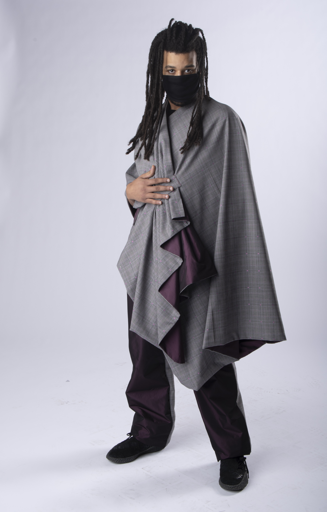
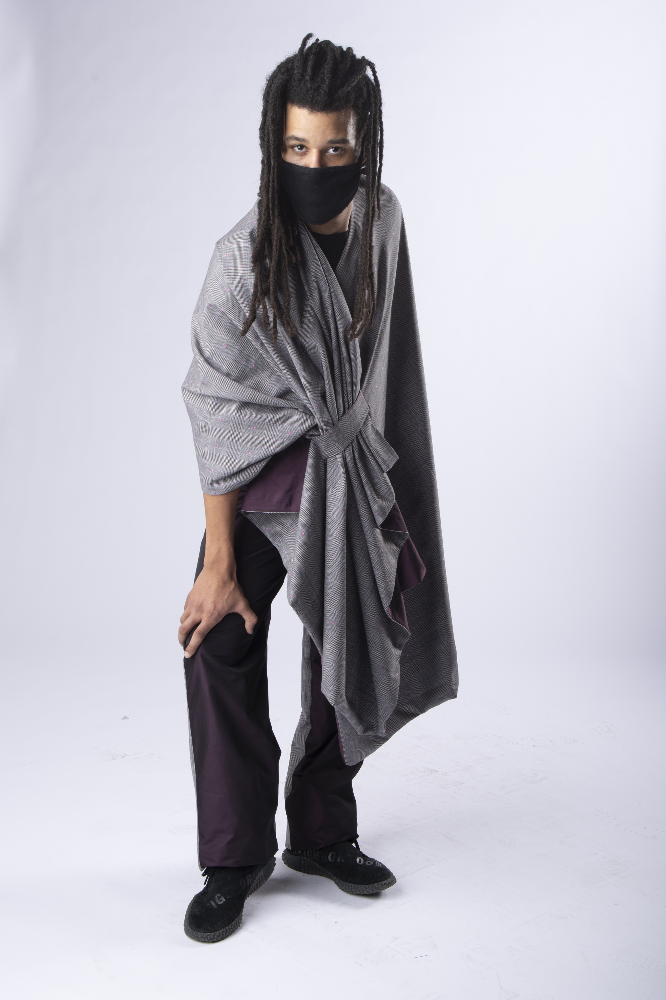
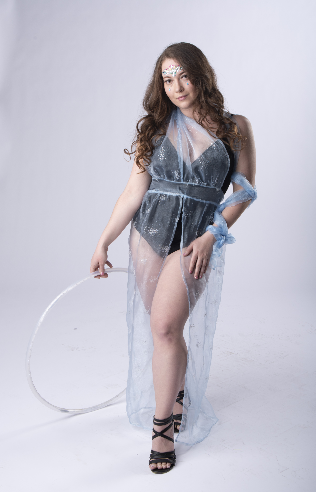
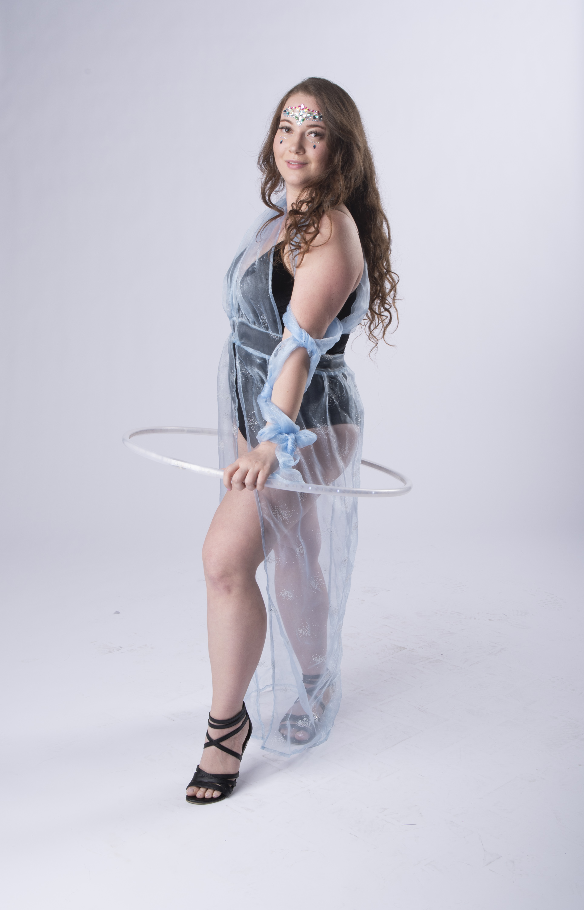
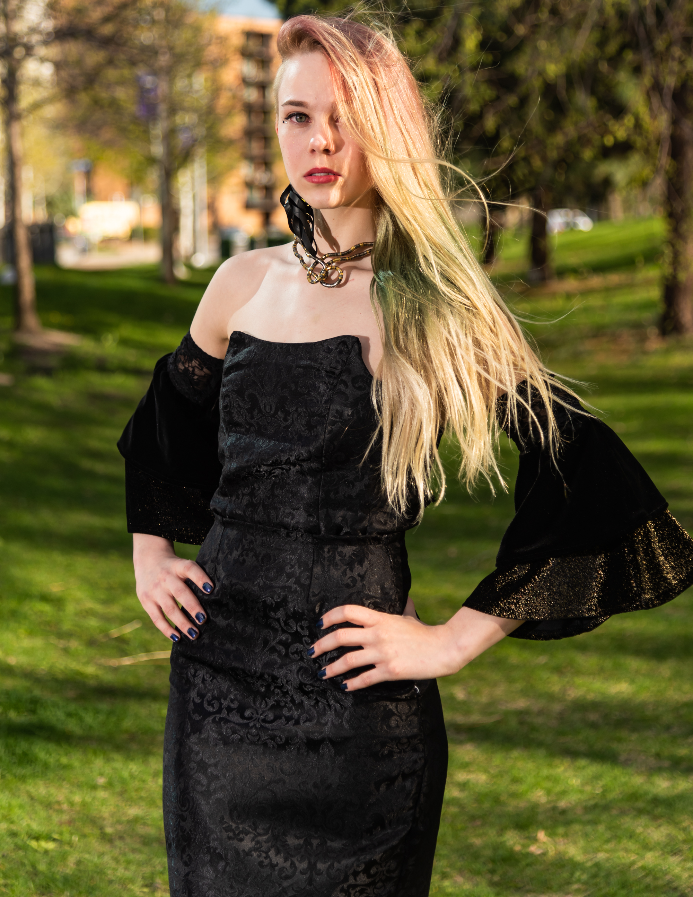
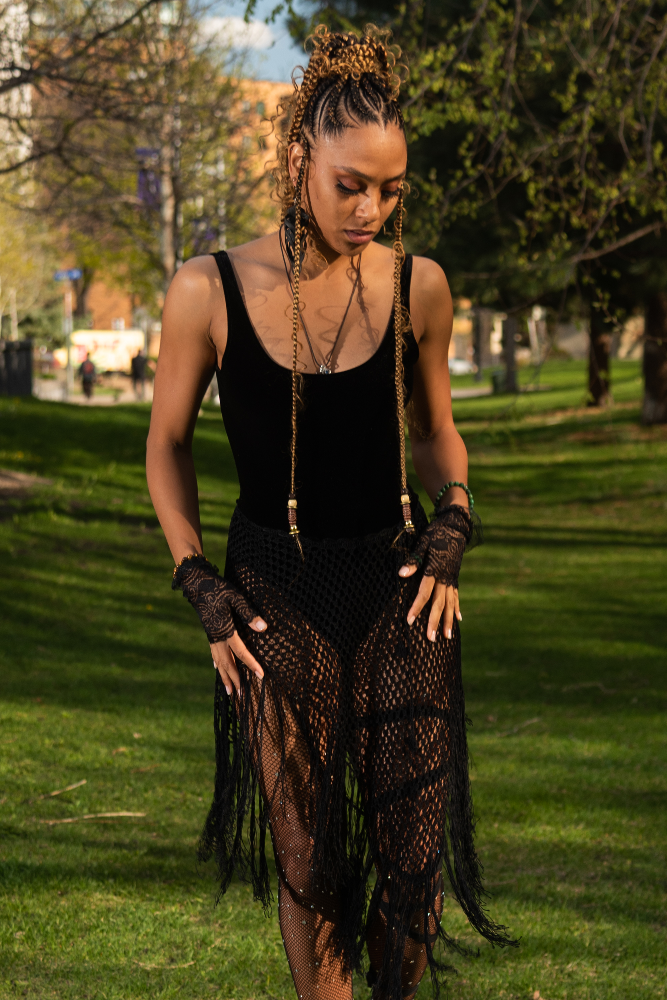
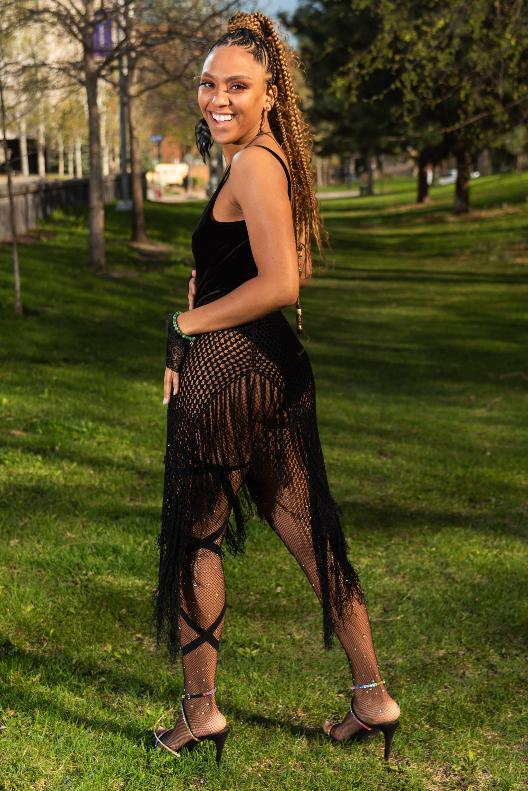

Wool blend plaid shawl and matching pants, ornamented with fuchsia flowers.

Wool blend plaid shawl and matching pants, ornamented with fuchsia flowers.

Sparkly sheer sky-blue dress with a convertible top made from repurposed fabric.

Sparkly sheer sky-blue dress with a convertible top made from repurposed fabric.

A corset top and pencil skirt, made of upcycled drapes, paired with lace and velvet sleeves.

A corset top and pencil skirt, made of upcycled drapes, paired with lace and velvet sleeves.

A one-piece made of stretch velvet, paired with lace gloves, a crochet skirt, and a leg wrap.
